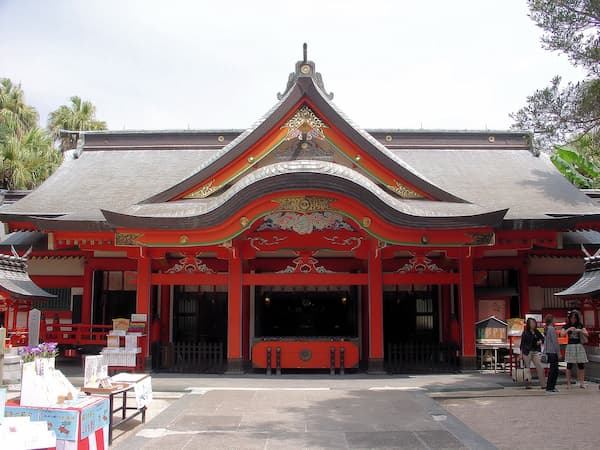

Play with the Island Cats

Visitors can enjoy spending time with the friendly cats, bringing treats and watching them roam freely around the island.
Walk Around the Harbor

Take a peaceful walk along the harbor and enjoy the scenic views of the Seto Inland Sea while cats wander around nearby.
Visit the Local Shrines
Discover small Shinto shrines scattered around the island where cats like to lounge in the sun.